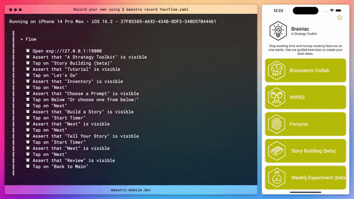

Exploring: Native App Testing with Maestro
TL;DR: Maestro is a tool for testing native apps. You simply write tests in a YAML file
Native app testing is challenging
After many attempts of testing with Cavy and Detox. I had basicly given up on E2E testing, specificly for our React Native projects.
I did have success last year with Detox and mocking the API with MirageJS (mock server). But it was a lot of work to setup and I don’t have a lot of experience adding tests to the project. So I was looking for something that was easier to setup and use.
I will say, these tools have had time improve and I should definitely give them another try sometime.
Maestro is awesome
Then I found Maestro, a tool for testing native apps. You simply write tests in a YAML file. It’s similar to Cucumber, but for native apps.
This is the first flow I made today.

The YAML look like this:
appId: host.exp.Exponent
---
# needed to open app in expo
- openLink: exp://127.0.0.1:19000
- assertVisible: "A Strategy Toolkit"
- tapOn: "Story Building (beta)"
- assertVisible: "Tutorial"
- tapOn: "Let's Go"
It’s very easy to write and understand. I can see this being a great tool us to continue use.
What helped me get started?
Since I was testing a expo app, this repo by Alexander Hodes was very helpful. It has many examples and a good starting point.
https://github.com/alexanderhodes/react-native-expo-maestro-example
Current questions I have
I need to go through the docs more, but here are some questions I have.